The TikZ and PGF Packages
Manual for version 3.1.10
Libraries
45 Background Library¶
-
TikZ Library backgrounds ¶
\usetikzlibrary{backgrounds} %
LaTeX
and plain
TeX
\usetikzlibrary[backgrounds] % ConTeXt
This library defines “backgrounds” for pictures.
This does not refer to background pictures, but rather to frames
drawn around and behind pictures. For example, this package
allows you to just add the
framed option to a picture to get a
rectangular box around your picture or
gridded to put a grid behind your
picture.
The first use of this library is to make the following key available:
-
/tikz/on background layer=⟨options⟩(no default) ¶
-
/tikz/every on background layer(style, no value) ¶
This key can (only) be used with a {scope} or \scoped. It will cause everything inside the scope to be typeset on a background layer.
The ⟨options⟩ will be executed inside background scope. This is useful since other options passed to the {scope} environment will be executed before the actual background material starts and, thus, will have no effect on it.
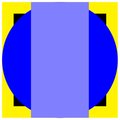
\usetikzlibrary {backgrounds}
\begin{tikzpicture}
% On main layer:
\fill[blue] (0,0) circle
(1cm);
\begin{scope}[on background layer={color=yellow}]
\fill (-1,-1) rectangle
(1,1);
\end{scope}
\begin{scope}[on background layer]
\fill[black] (-.8,-.8) rectangle
(.8,.8);
\end{scope}
% On main layer again:
\fill[blue!50] (-.5,-1) rectangle
(.5,1);
\end{tikzpicture}
A scope with this option set should not be “deeply nested” inside the picture since changes to the graphic state (like the color or the transformation matrix) “do not survive a layer switch”, see also Section 113 for details. In particular, setting, say, the line width at the beginning of a picture will not have an effect on the background picture.
For this reason, it may be useful to setup the following style:
This style is executed at the beginning of each background layer. If you have a global setup in every picture, you should consider putting that part of it that concerns the graphics state into this style.
\usetikzlibrary {backgrounds}
\tikzset{
every picture/.style={line width=1ex},
every on background layer/.style={every picture}
}
\begin{tikzpicture}
\draw [->] (0,0) --
(2,1);
\scoped[on background layer]
\draw[red] (0,1) --
(2,0);
\end{tikzpicture}
When this package is loaded, the following styles become available:
-
/tikz/show background rectangle(style, no value) ¶
-
/tikz/inner frame xsep=⟨dimension⟩ (no default, initially 1ex) ¶
-
/tikz/inner frame ysep=⟨dimension⟩ (no default, initially 1ex) ¶
-
/tikz/inner frame sep=⟨dimension⟩(no default) ¶
-
/tikz/tight background(style, no value) ¶
-
/tikz/loose background(style, no value) ¶
-
/tikz/background rectangle(style, initially draw) ¶
This style causes a rectangle to be drawn behind your graphic. This style option must be given to the {tikzpicture} environment or to the \tikz command.
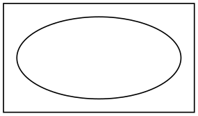
\usetikzlibrary {backgrounds}
\begin{tikzpicture}[show background rectangle]
\draw (0,0) ellipse
(10mm and 5mm);
\end{tikzpicture}
The size of the background rectangle is determined as follows: We start with the bounding box of the picture. Then, a certain separator distance is added on the sides. This distance can be different for the \(x\)- and \(y\)-directions and can be set using the following options:
Sets the additional horizontal separator distance for the background rectangle.
Same for the vertical separator distance.
Sets the horizontal and vertical separator distances simultaneously.
The following two styles make setting the inner separator a bit easier to remember:
Sets the inner frame separator to 0pt. The background rectangle will have the size of the bounding box.
Sets the inner frame separator to 2ex.
You can influence how the background rectangle is rendered by setting the following style:
This style dictates how the background rectangle is drawn or filled. The default setting causes the path of the background rectangle to be drawn in the usual way. Setting this style to, say, fill=blue!20 causes a light blue background to be added to the picture. You can also use more fancy settings as shown in the following example:
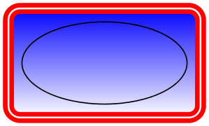
\usetikzlibrary {backgrounds}
\begin{tikzpicture}
[background rectangle/.style=
{double,ultra thick,draw=red,top color=blue,rounded corners},
show background rectangle]
\draw (0,0) ellipse
(10mm and 5mm);
\end{tikzpicture}
Naturally, no one in their right mind would use the above, but here is a nice background:
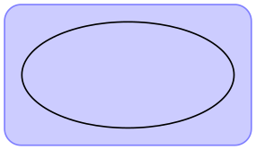
\usetikzlibrary {backgrounds}
\begin{tikzpicture}
[background rectangle/.style=
{draw=blue!50,fill=blue!20,rounded corners=1ex},
show background rectangle]
\draw (0,0) ellipse
(10mm and 5mm);
\end{tikzpicture}
-
/tikz/framed(style, no value) ¶
This is a shorthand for show background rectangle.
-
/tikz/show background grid(style, no value) ¶
-
/tikz/background grid(style, initially draw,help lines) ¶
This style behaves similarly to the show background rectangle style, but it will not use a rectangle path, but a grid. The lower left and upper right corner of the grid is computed in the same way as for the background rectangle:
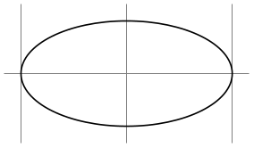
\usetikzlibrary {backgrounds}
\begin{tikzpicture}[show background grid]
\draw (0,0) ellipse
(10mm and 5mm);
\end{tikzpicture}
You can influence the background grid by setting the following style:
This style dictates how the background grid path is drawn.
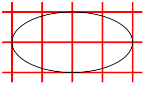
\usetikzlibrary {backgrounds}
\begin{tikzpicture}
[background grid/.style={thick,draw=red,step=.5cm},
show background grid]
\draw (0,0) ellipse
(10mm and 5mm);
\end{tikzpicture}
This option can be combined with the framed option (use the framed option first):
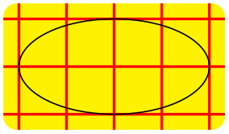
\usetikzlibrary {backgrounds}
\tikzset{background grid/.style={thick,draw=red,step=.5cm},
background rectangle/.style={rounded corners,fill=yellow}}
\begin{tikzpicture}[framed,gridded]
\draw (0,0) ellipse
(10mm and 5mm);
\end{tikzpicture}
-
/tikz/gridded(style, no value) ¶
This is a shorthand for show background grid.
-
/tikz/show background top(style, no value) ¶
-
/tikz/outer frame xsep=⟨dimension⟩ (no default, initially 0pt) ¶
-
/tikz/outer frame ysep=⟨dimension⟩ (no default, initially 0pt) ¶
-
/tikz/outer frame sep=⟨dimension⟩(no default) ¶
-
/tikz/background top(style, initially draw) ¶
This style causes a single line to be drawn at the top of the background rectangle. Normally, the line coincides exactly with the top line of the background rectangle:
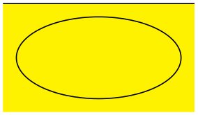
\usetikzlibrary {backgrounds}
\begin{tikzpicture}[
background rectangle/.style={fill=yellow},
framed,show background top]
\draw (0,0) ellipse
(10mm and 5mm);
\end{tikzpicture}
The following option allows you to lengthen (or shorten) the line:
The ⟨dimension⟩ is added at the left and right side of the line.
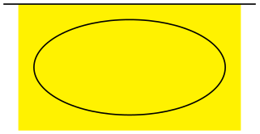
\usetikzlibrary {backgrounds}
\begin{tikzpicture}
[background rectangle/.style={fill=yellow},
framed,
show background top,
outer frame xsep=1ex]
\draw (0,0) ellipse
(10mm and 5mm);
\end{tikzpicture}
This option does not apply to the top line, but to the left and right lines, see below.
Sets both the \(x\)- and \(y\)-separation.
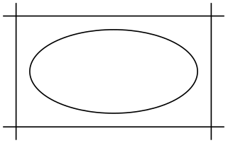
\usetikzlibrary {backgrounds}
\begin{tikzpicture}
[background rectangle={fill=blue!20},
outer frame sep=1ex,%
show background top,%
show background bottom,%
show background left,%
show background right]
\draw (0,0) ellipse
(10mm and 5mm);
\end{tikzpicture}
You can influence how the line is drawn grid by setting the following style:
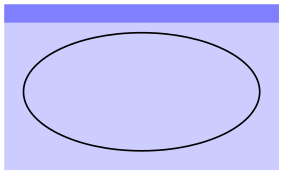
\usetikzlibrary {backgrounds}
\tikzset{background rectangle/.style={fill=blue!20},
background top/.style={draw=blue!50,line width=1ex}}
\begin{tikzpicture}[framed,show background top]
\draw (0,0) ellipse
(10mm and 5mm);
\end{tikzpicture}
-
/tikz/show background bottom(style, no value) ¶
Works like the style for the top line.
-
/tikz/show background left(style, no value) ¶
Works similarly.
-
/tikz/show background right(style, no value) ¶
Works similarly.